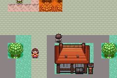
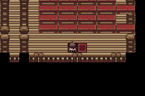
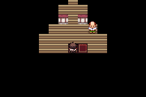
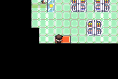

Actual automated controller input in mGBA; native240×160 PNGs untouched. Silent videos sample controller movement at15fps. No map/warp RAM writes. Setup/limits and exact ROM are in TEST_RESULTS.json. Owner Delta/visual acceptance remains pending.
dowsing-wall: actual normal approach blocks.theater-wall: actual normal approach blocks.center-wall: actual normal approach blocks.mart-wall: actual normal approach blocks.burned-wall: actual normal approach blocks.custom-gym-wall: actual normal approach blocks.northwest-private-wall: actual normal approach blocks.north-private-wall: actual normal approach blocks.southeast-private-wall: actual normal approach blocks.
All27 Ecruteak map views
Every map was reached normally; every declared doorway/stair/pad pair was exercised both ways. These are camera views, not complete floor renders. HGSS links are full-map reference mosaics at original resolution, not equivalent DS gameplay crops. Projection/camera differ; no pixel-identical reference match is asserted. References credited to Pokémon/Game Freak/Nintendo/Bulbagarden Archives and need internet. Missing interior rasters are stated rather than invented.
EcruteakCity — 75:10
Liked exterior and owner Ghost Gym; signs, private-door labels, six freestanding trees, pond and three road apertures

Actual current GBA viewport; owner visual acceptance pending.HGSS reference mosaic, original dimensions
DS perspective/height projected into stable64x64 GBA city; original accepted facade art retained
Owner-supplied custom Ghost Gym is a deliberate Black Ledger addition
Three non-enterable reference facades remain private homes with explicit locked-door text
Neutral primary brick replaces flower/arrow tile only within7-tile scrolling buffers
EcruteakCity_BurnedTower — 75:11
Charred rear wall, statues, stone/wood floor, basement stair and return
Actual current GBA viewport; owner visual acceptance pending.HGSS reference mosaic, original dimensions
Original GBA-compatible temple art, no HGSS graphics copied
DS coordinates translated to crop unused matrix margin; no relative layout change
Existing legacy exterior warp aliases preserved where applicable
EcruteakCity_BellTower — 75:12
Reference Bell Tower 1F: wooden walkways, rails/braces, pillars and canonical stair/pad/jump network
Actual current GBA viewport; owner visual acceptance pending.HGSS reference mosaic, original dimensions
Original GBA-compatible temple art, no HGSS graphics copied
DS coordinates translated to crop unused matrix margin; no relative layout change
Existing legacy exterior warp aliases preserved where applicable
EcruteakCity_Residence — 75:13
Furnished southwest home: refrigerator, cabinet, TV, dining table, chairs and two residents
Actual current GBA viewport; owner visual acceptance pending.
No complete native HGSS raster in this cache. Canonical geometry/props are pinned; exact decorative matching is not certified.
GBA furniture/flat room instead of DS models
No HGSS plot actors or item reward imported
Legacy paired exit retained
EcruteakCity_DanceTheater — 75:14
Stage, audience seating, five performers, optional working show

Actual current GBA viewport; owner visual acceptance pending.
No complete native HGSS raster in this cache. Canonical geometry/props are pinned; exact decorative matching is not certified.
GBA furniture/flat room instead of DS models
No HGSS plot actors or item reward imported
Legacy paired exit retained
EcruteakCity_Gym — 75:15
Owner custom exterior; lower bridge, lamps, guide and safe falls

Actual current GBA viewport; owner visual acceptance pending.HGSS reference mosaic, original dimensions
Tall DS room split at source chunk seam into existing two GBA map IDs
Native scripted return when stepping off bridge; no badge gate or candle-extinguishing battle rule
Accepted Morty/student practice scripts retained; optional student beside path
EcruteakCity_PokemonCenter_1F — 75:16
Healing, PC, local respawn, waiting area and communication reception
Actual current GBA viewport; owner visual acceptance pending.
No complete native HGSS raster in this cache. Canonical geometry/props are pinned; exact decorative matching is not certified.
Native GBA heal/counter/PC tiles at HGSS service positions
DS elevated rear reception flattened; unavailable DS online entrance is a labeled service desk, not a broken warp
Existing nurse/heal ID/local ID preserved; shared Olivine layout unchanged
EcruteakCity_Mart — 75:17
Two counters, stocked shelves and accepted original shop inventory

Actual current GBA viewport; owner visual acceptance pending.
No complete native HGSS raster in this cache. Canonical geometry/props are pinned; exact decorative matching is not certified.